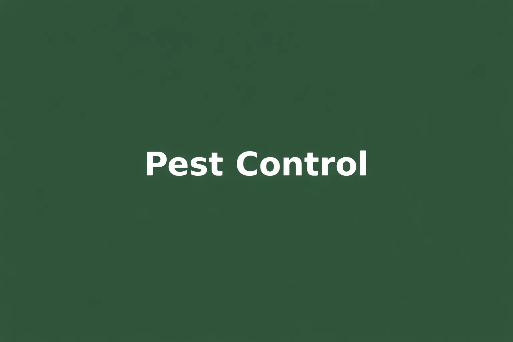
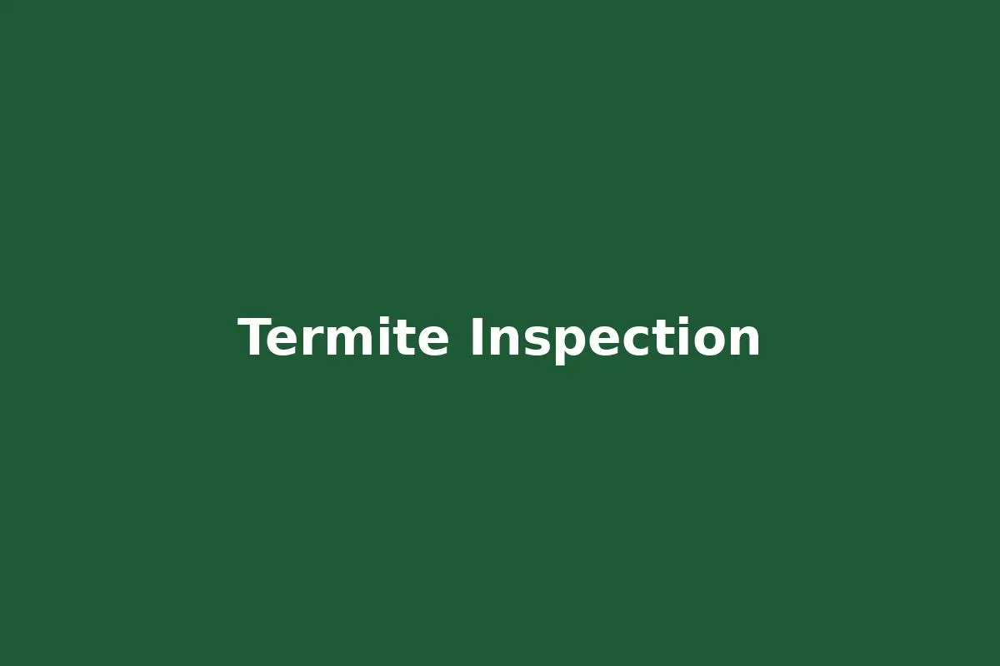
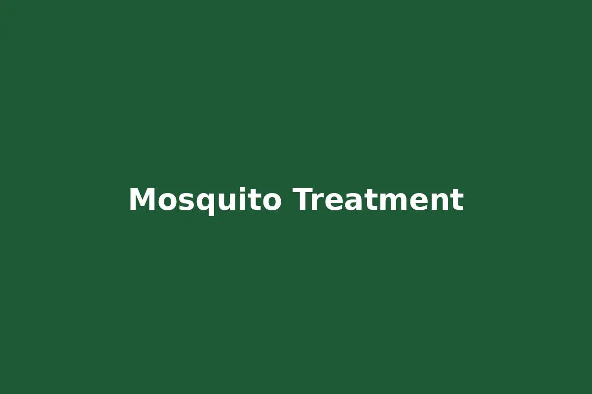
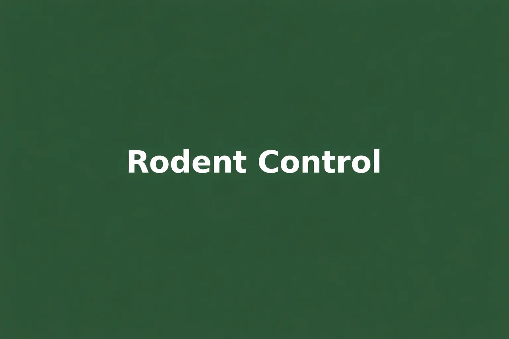

Salvant Environmental Services provides professional pest control services throughout the St George Baton Rouge area including termite treatment, mosquito control, rodent removal and wildlife services.
Call For Free EstimateYears Serving Louisiana
Customers Served
BBB Rating
Baton Rouge Company
Homes in the St George area frequently deal with termites, cockroaches, ants, rodents and seasonal mosquito infestations due to Louisiana’s warm climate and humidity.
Salvant Environmental Services provides pest inspections, preventative treatments and ongoing pest management programs designed specifically for properties in the Baton Rouge region.

General pest control programs for ants, cockroaches, spiders and household pests.

Professional termite inspection and treatment programs.

Seasonal mosquito reduction treatments.

Rat and mouse removal including trapping and exclusion methods.
Removal of nuisance wildlife affecting homes and businesses.
Our technicians regularly service homes located in ZIP codes 70810, 70816 and 70817 throughout the St George Baton Rouge region.
"Salvant Environmental handled a termite issue at our home quickly and professionally."
"Their termite inspection and treatment program protected our home from further damage."
"Very knowledgeable technicians and great customer service."
Contact Salvant Environmental Services today for a free estimate.
📞 Call 225-383-2847